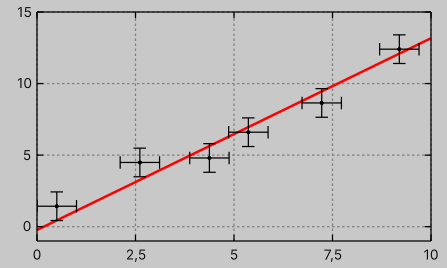
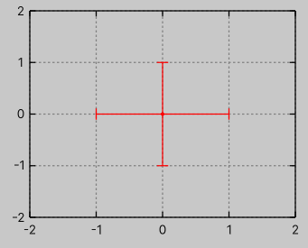
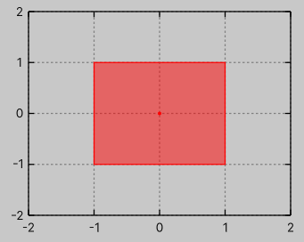
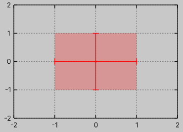
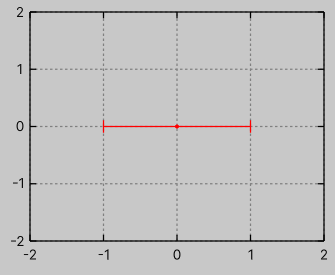
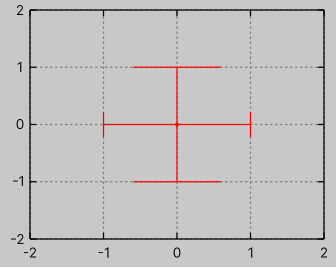
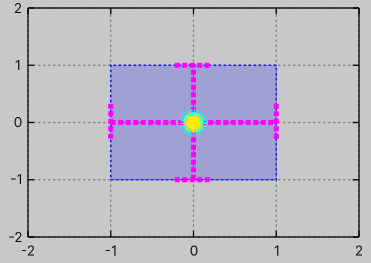

Plot with error bars
Data
To plot error bars, you can use PlotWithErrorBars.
Unlike other plot types, this plot requires an IReadOnlyList<ErrorBar> data series.
To construct an ErrorBar use the constructor
var bar = new ErrorBar(x: 1, y: 2, xlow: 1, xhigh: 1, ylow: 1, yhigh: 3);
or one of the delta static methods
var bar = ErrorBar.DeltaY(p: new(1, 2), dy: 1);
Below is an example of a plot with error bars showing a simple linear function with added random noise.
var graph = new Graph
{
XAxis = { Min = 0, Max = 10 },
YAxis = { Min = -1, Max = 15 },
};
var random = new Unity.Mathematics.Random(seed: 42);
static float f(float x) => 1.34f * x - 0.231f;
static float2 p(float x) => new(x, f(x));
var dxy = math.float2(0.5f, 1f);
float2 rnd() => math.float2(0.5f, 1) * random.NextFloat2(-1, 1);
ErrorBar[] bars =
{
ErrorBar.DeltaXY(p(1) + rnd(), dxy),
ErrorBar.DeltaXY(p(3) + rnd(), dxy),
ErrorBar.DeltaXY(p(4) + rnd(), dxy),
ErrorBar.DeltaXY(p(5) + rnd(), dxy),
ErrorBar.DeltaXY(p(7) + rnd(), dxy),
ErrorBar.DeltaXY(p(9) + rnd(), dxy),
};
graph.PlotWithLines(Sequence.Uniform(x => f(x)), theme: new() { LineWidth = 2 });
graph.PlotWithErrorBars(bars).SetStyle(0);

Styling
The styling is similar to PlotWithLinesPoints, using the following properties:
- line element:
LineColor,LineWidth,LineDashPattern, - point element:
PointColor,PointFillColor,PointWidth,PointSize,PointStyle,PointDashPattern, - box element (see style 3):
BoxColor,BoxFillColor,BoxWidth,BoxDashPattern.
The main difference is that PointStyle defaults to 0 (dot) and does not increment with subsequent styling.
In other words, it remains a dot for all PlotWithErrorBars calls.
Additionally, the following properties are available for styling error bars: ErrorBarStyle, ErrorBarFillColor, and ErrorBarWidth.
Currently, 4 error bar styles are implemented:
style 0 (corresponding to the
ErrorBarStyle.Noneenum) draw nothing (just for API consistency)style 1 (corresponding to the
ErrorBarStyle.Crossenum) cross-shape error bars

- style 2 (corresponding to the
ErrorBarStyle.Boxenum): box-shaped error bars.

- style 3 (corresponding to the
ErrorBarStyle.CrossBoxenum): combination of style 1 and 2.

The ErrorBarFillColor property specifies the fill color of the box when using style 2.
The ErrorBarWidth property controls the width of the transverse lines in cross-shaped error bars.
The width is specified in screen-space units.
The property supports implicit conversions from float values and tuples of the form (float?, float?), with support for null values.
float.NaN can be used to disable the drawing of a specific error bar axis entirely.
Alternatively, this can be achieved using the ErrorBarWidth.DisableX() and ErrorBarWidth.DisableY() methods.
Examples:
ErrorBarWidth = ErrorBarWidth.DisableY()

ErrorBarWidth = (20, 70)

Full style demo:

.my-plot {
--graph-line-width: 2;
--graph-line-color: magenta;
--graph-line-dash-pattern: "4 4";
--graph-point-color: cyan;
--graph-point-size: 8;
--graph-error-bar-point-style: 7;
--graph-point-width: 5;
--graph-point-dash-pattern: "1 1";
--graph-point-fill-color: yellow;
--graph-error-bar-width-x: 30;
--graph-error-bar-width-y: 30;
--graph-error-bar-style: 3;
--graph-box-color: blue;
--graph-box-fill-color: rgba(0., 0., 1., 0.2);
--graph-box-width: 1;
--graph-box-dash-pattern: "2 2";
}